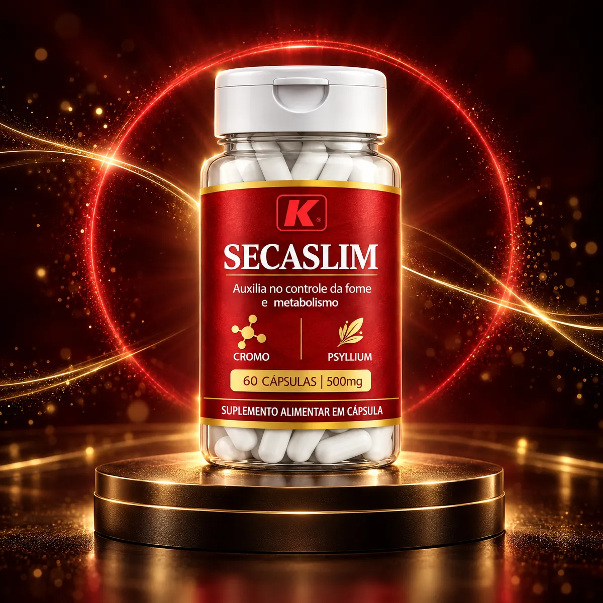
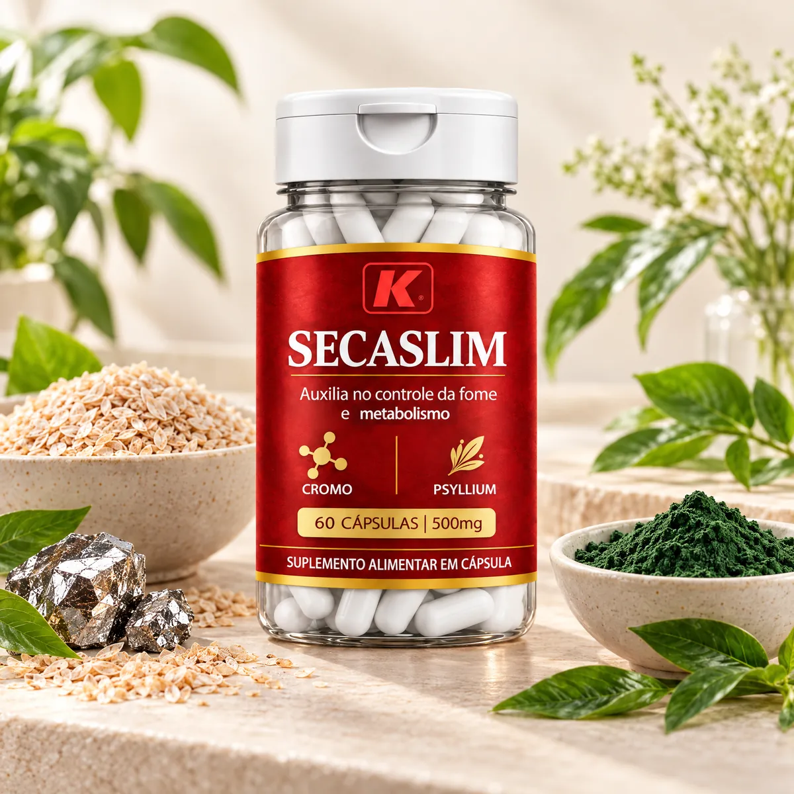
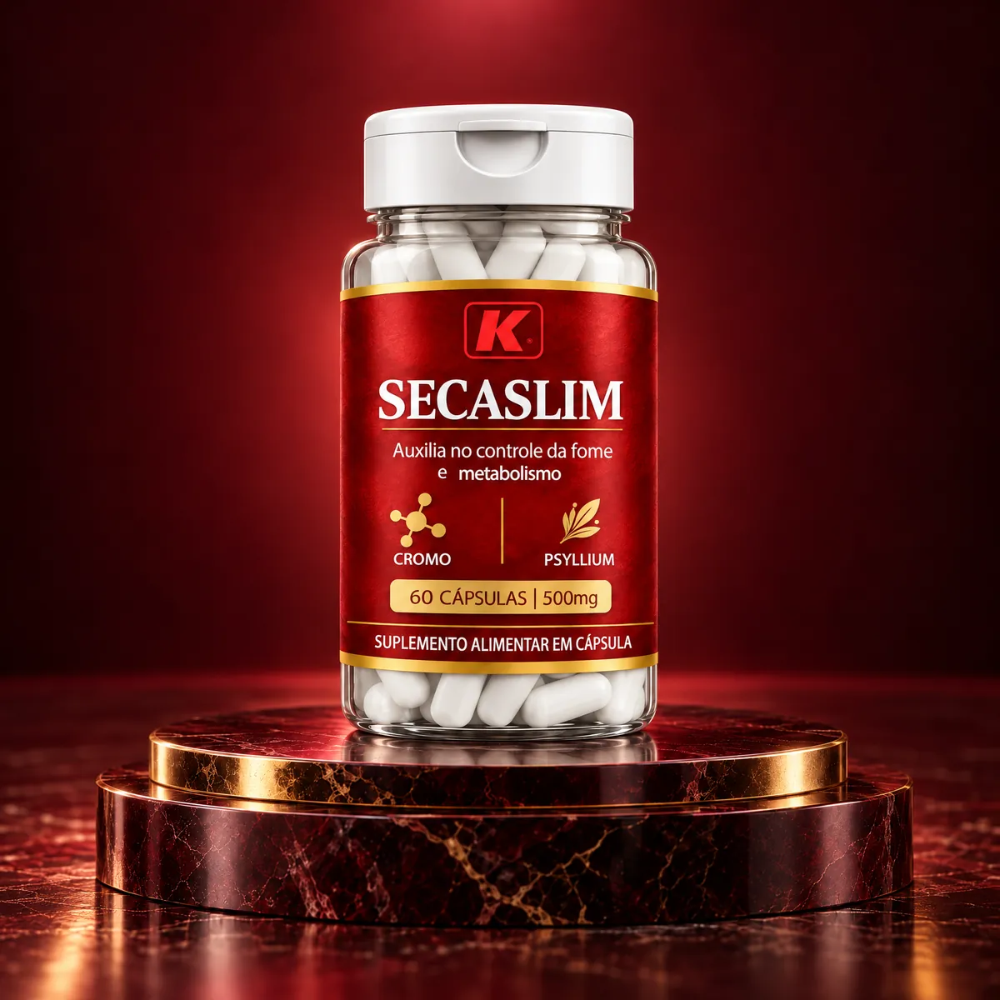
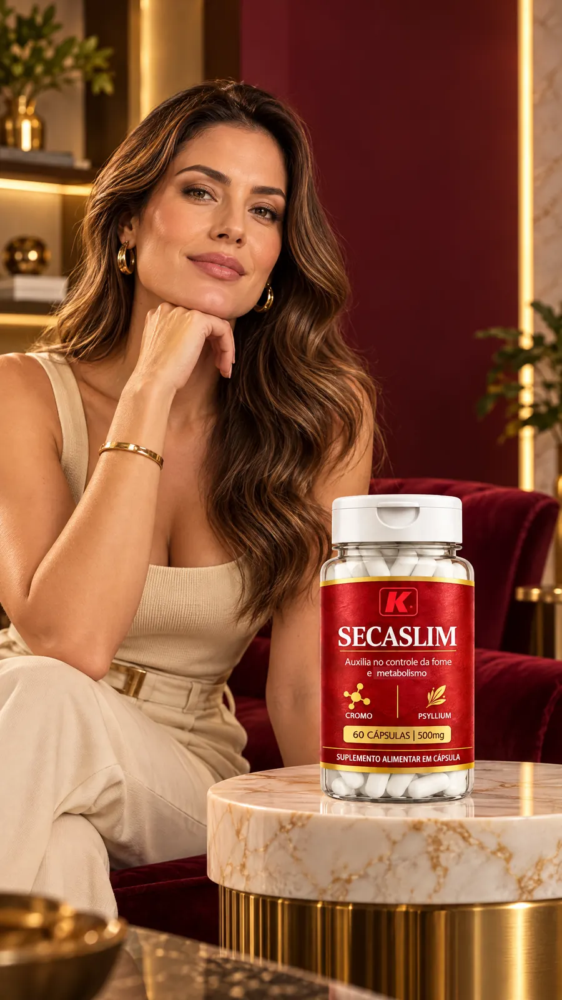
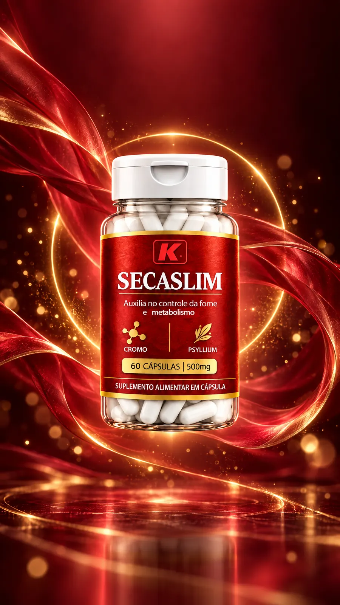
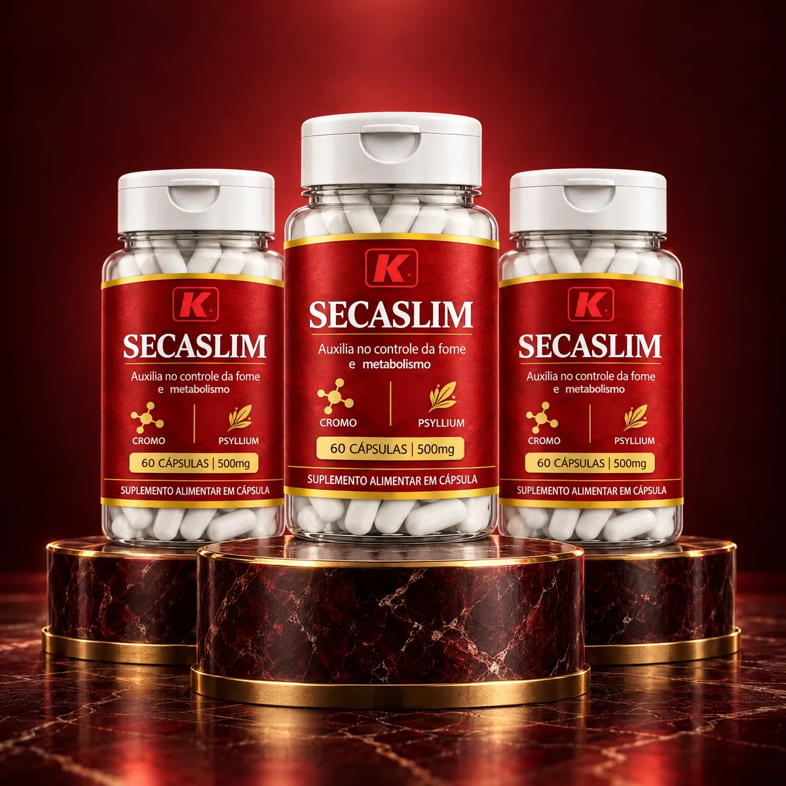
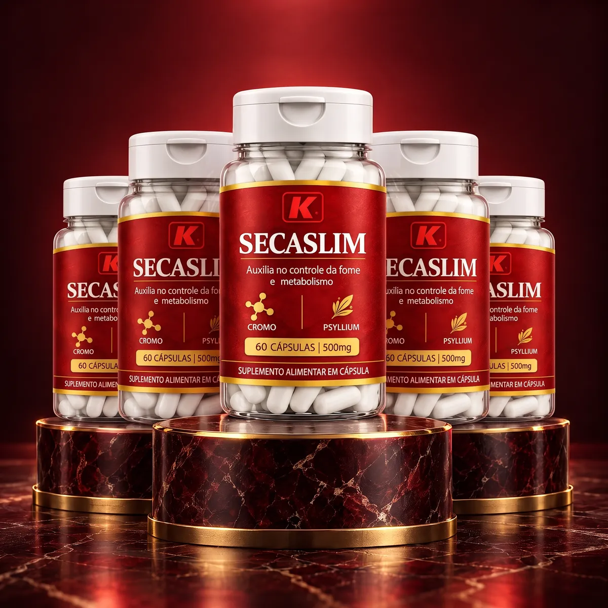

Kit 1 Pote
1 pote · 60 cápsulas · 30 dias
R$ 129,90
ou em até 12x no cartão
R$ 129,90 por pote · 30 dias de uso
- 1 pote com 60 cápsulas
- 30 dias de uso
- Ideal para conhecer o produto
Suplemento alimentar com fibras de psyllium, picolinato de cromo e espirulina, para acompanhar uma rotina de alimentação equilibrada e atividade física.*


O Secaslim é o suplemento alimentar da Kromus para quem está cuidando da alimentação e quer praticidade no dia a dia.
Cada cápsula de 500 mg reúne a fibra do psyllium, o picolinato de cromo e a espirulina. São 2 cápsulas por dia, uma pela manhã e outra à noite, sempre com água. Um pote rende 30 dias.*
Escolher meu kit Secaslim
Fibras, um mineral e uma microalga: veja o papel de cada um.
Com água, o psyllium forma um gel que contribui para a sensação de saciedade.*
As fibras alimentares auxiliam no funcionamento do intestino. Seu consumo deve ser acompanhado da ingestão de líquidos.
O picolinato de cromo fornece cromo, mineral que participa do metabolismo de carboidratos, proteínas e gorduras.
Microalga que é fonte de proteínas, presente em cada cápsula da fórmula.
Uma pela manhã e outra à noite. Fácil de encaixar na rotina, em casa ou fora.
Kits com 1, 3 ou 5 potes para manter a constância. Quanto maior o kit, menor o preço por pote.
* O Secaslim é um suplemento alimentar e não substitui uma alimentação equilibrada nem a prática de atividade física. Os resultados variam de pessoa para pessoa.
Pronta para começar?
Pote com 60 cápsulas de 500 mg, rótulo com os ingredientes em destaque e tampa flip-top que fecha bem. Simples de levar e de tomar.
Tome 1 cápsula com um copo cheio de água.
Tome a segunda cápsula, também com um copo cheio de água.
As fibras do psyllium precisam de líquido para agir bem e formar o gel.
Combine o uso diário com alimentação equilibrada e atividade física.
Não exceda 2 cápsulas por dia. Se você usa medicamentos, pergunte ao seu médico sobre o intervalo entre eles e as fibras.


Suplemento alimentar em cápsulas de 500 mg, com três ingredientes principais.
Quanto mais potes, menor o preço de cada um. O desconto é calculado sobre o preço de R$ 129,90 do pote avulso.
1 pote · 60 cápsulas · 30 dias

-35%OFF3 potes · 180 cápsulas · 90 dias

-46%OFF5 potes · 300 cápsulas · 150 dias
Se em até 7 dias depois de receber você desistir da compra, devolvemos o valor pago, como garante o Código de Defesa do Consumidor. É só escrever para atendimento.phnegociosdigitais@gmail.com.
Ler a Política de Troca e ReembolsoÉ um suplemento alimentar em cápsulas da Kromus Suplementos com picolinato de cromo, psyllium e espirulina. Cada pote tem 60 cápsulas de 500 mg, o suficiente para 30 dias tomando 2 cápsulas por dia.
Tome 2 cápsulas por dia: 1 pela manhã e 1 à noite, sempre com um copo cheio de água. Não exceda a recomendação diária indicada na embalagem.
O Secaslim é um suplemento alimentar e não é um medicamento para emagrecer. Ele pode fazer parte de uma rotina com alimentação equilibrada e atividade física, e os resultados dependem desses hábitos e variam de pessoa para pessoa.
O psyllium é uma fibra que absorve água e forma um gel. Por isso cada cápsula deve ser tomada com um copo cheio de água, e vale manter uma boa hidratação ao longo do dia.
Gestantes, lactantes, crianças e pessoas com alguma condição de saúde ou que usam medicamentos devem falar com um médico ou nutricionista antes de consumir. Quem toma remédios de uso contínuo deve perguntar ao médico sobre o intervalo entre o medicamento e as fibras.
Com 2 cápsulas por dia, 1 pote dura 30 dias, o Kit 3 Potes dura 90 dias e o Kit 5 Potes dura 150 dias. Nos kits maiores, o preço de cada pote é menor.
Frete fixo de R$ 19,90 para todo o Brasil, cobrado no checkout. Envio via PAC, com entrega em cerca de 10 dias úteis após a confirmação do pagamento. Você recebe o código de rastreio por e-mail.
Sim. Você tem 7 dias corridos a partir do recebimento para desistir da compra, conforme o artigo 49 do Código de Defesa do Consumidor. Veja os detalhes na Política de Troca e Reembolso.
O pagamento é processado pela RXPAY em ambiente seguro. Você pode pagar com Pix, boleto ou cartão de crédito em até 12x (os juros do parcelamento são calculados no checkout).
Este produto não é um medicamento. Não exceder a recomendação diária de consumo indicada na embalagem. Mantenha fora do alcance de crianças. Gestantes, lactantes, crianças e pessoas que usam medicamentos devem consultar um médico ou nutricionista antes de consumir. Resultados variam de pessoa para pessoa. Imagens ilustrativas.
Leve o Kit 3 Potes por R$ 249,90: sai R$ 83,30 por pote, 35% a menos do que comprar os potes avulsos.